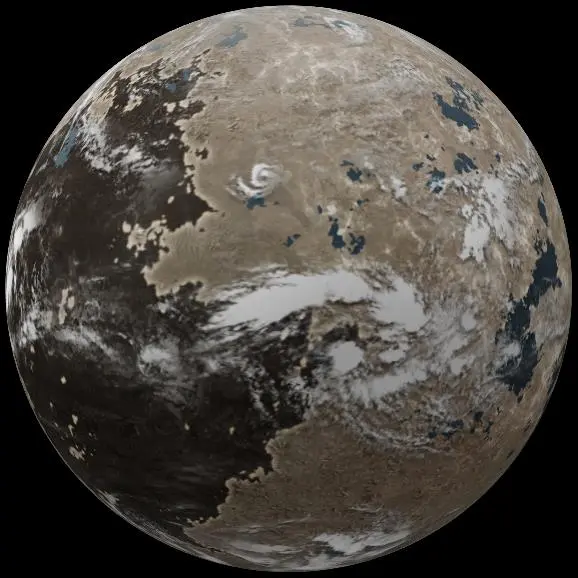

Próxima Centauri b - Exoplaneta

Introdução e História
Próxima Centauri b — também chamado de Proxima b — é um exoplaneta que orbita dentro da chamada zona habitável de Próxima Centauri, uma estrela anã vermelha localizada a cerca de 4,2 anos‑luz do Sol, na constelação de Centauro.
Descoberto em 2016 por meio do método de velocidade radial, ele se tornou famoso por ser o exoplaneta potencialmente habitável mais próximo do Sistema Solar conhecido até hoje, atraindo grande interesse científico e público.
Características Físicas: Massa, Órbita e Temperatura
Próxima Centauri b é considerado um planeta do tipo “super‑Terra” ou terrestre, com uma massa mínima estimada muito próxima à da Terra.
Ele orbita muito mais perto de sua estrela do que a Terra orbita o Sol — aproximadamente 0,0485 unidades astronômicas — completando uma volta em cerca de 11,2 dias terrestres.
Apesar da proximidade com a estrela, sua temperatura de equilíbrio pode ser compatível com a presença de água líquida, dependendo da composição da atmosfera, ainda não conhecida pelos cientistas.
Potencial de Habitabilidade
- 💧 Zona Habitável: O planeta orbita dentro da zona habitável teórica de Próxima Centauri, onde a luz estelar pode permitir temperaturas adequadas para água líquida na superfície.
- ⚠️ Desafios à Habitabilidade: A estrela Proxima Centauri é muito ativa, com forte emissão de radiação e eventos de flare, o que poderia dificultar a manutenção de uma atmosfera estável capaz de proteger a superfície.
- ❓ Atmosfera Desconhecida: Ainda não há confirmação de que Próxima b tenha uma atmosfera — um elemento essencial para que a água líquida e condições de vida semelhantes às da Terra sejam possíveis.
Por essas razões, embora seja um dos principais candidatos para pesquisa de habitabilidade fora do Sistema Solar, sua real capacidade de abrigar vida ainda é incerta.
Curiosidades
Próxima Centauri b é o exoplaneta potencialmente habitável mais próximo de nós, situado apenas a cerca de 4,2 anos‑luz da Terra — uma distância astronômica “curta” se comparada à maioria dos outros exoplanetas conhecidos.
Por ser tão próximo, esse exoplaneta é um dos alvos preferidos para futuras observações com telescópios avançados e missões interestelares projetadas para estudar detalhadamente mundos fora do Sistema Solar.
Origem do Nome
O nome “Próxima Centauri b” segue o sistema convencional de nomenclatura de exoplanetas, em que a letra “b” indica o primeiro planeta descoberto em órbita de uma estrela — neste caso, Próxima Centauri, a estrela mais próxima do nosso Sol.
Esse tipo de técnica de nomeação é padronizado pela União Astronômica Internacional (IAU) e reflete a estrela hospedeira e a ordem de descoberta dos planetas ao seu redor, em vez de usar nomes mitológicos ou culturais como ocorre com objetos do Sistema Solar.
Referências
- Wikipedia. Próxima Centauri b. Disponível em: https://pt.wikipedia.org/wiki/Proxima_Centauri_b. Acesso em: 26 dez. 2025.
- NASA Exoplanet Exploration. Proxima Centauri b. Disponível em: https://science.nasa.gov/exoplanet-catalog/proxima-centauri-b/. Acesso em: 26 dez. 2025.
- NASA. ESO Discovers Earth-Size Planet in Habitable Zone of Nearest Star. Disponível em: https://science.nasa.gov/universe/exoplanets/eso-discovers-earth-size-planet-in-habitable-zone-of-nearest-star/ . Acesso em: 26 dez. 2025.